TUTORIAL GUIDE
GD / DH
Data Integration and Visualization Solution
Version 1.0
Bengaluru, Karnataka 560093.
Role Access
GD / DH has full project and application access, including project creation, project/member management, project data operations, analytical modules, organizational records, deletion where permitted, and own settings/password.
Guide scope: This tutorial includes only the workflows applicable to this role/group. Features outside the assigned access are intentionally omitted or marked as permission-based.
1.Accessing the Application
- Open the application in a supported web browser.
- Enter your registered email address.
- Enter your password.
- Click Login.
- After successful authentication, the system opens the dashboard permitted for your role.
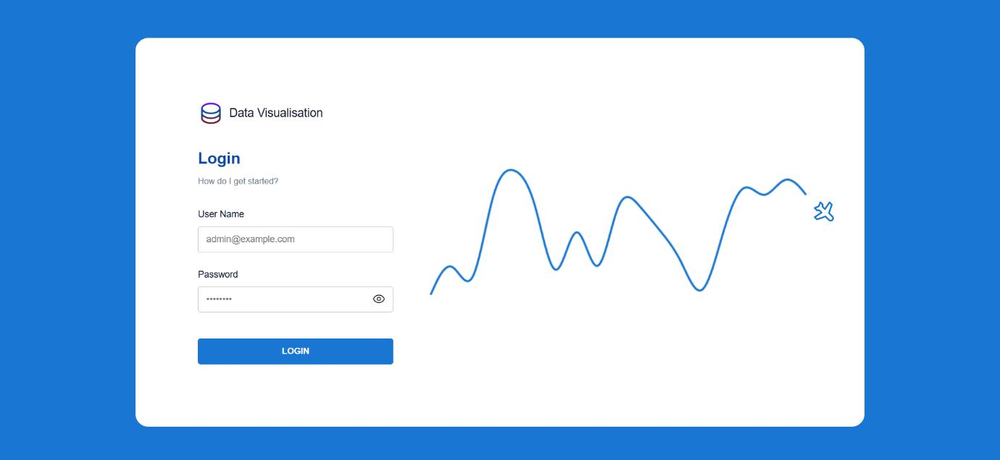
2.Management Dashboard
The management dashboard summarizes project and dataset activity and provides access to all available projects.
- Total Projects
- CFD Data Count
- Wind Data Count
- Flight Data Count
- Aero Data Count
- Total Reports
3.Create and Open a Project
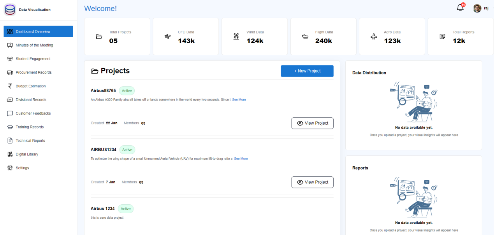
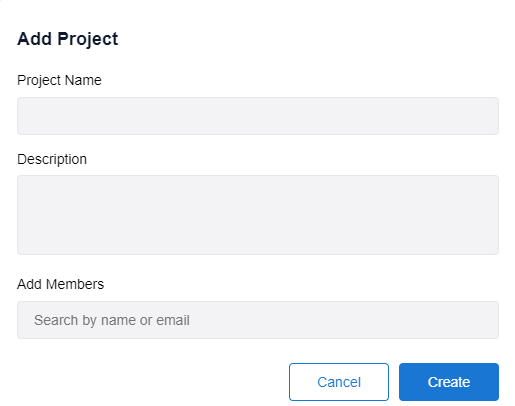
- Click + New Project.
- Enter the Project Name and Project Description.
- Add Members by searching for users.
- Click Create.
- Click View Project to open the Project Overview workspace.
4.Notifications
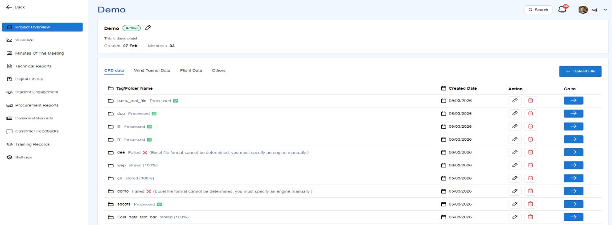
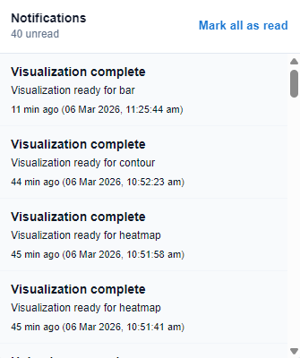
- Click the notification bell at the top-right of the application.
- Review the notification message and timestamp.
- Open or acknowledge the notification when an action is required.
- Use Mark all as read when appropriate.
5.Minutes of Meeting
The Minutes of Meeting module stores meeting documents and tracks associated action items.
- Technology Council (TCM)
- PMRC
- Executive Board Meeting
- Group Director Meeting
For PMRC and Executive Board meetings, users have the option to associate the meeting minutes with a specific project.
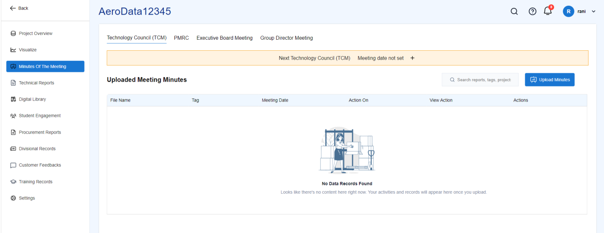
Add New Meeting
- Open Minutes of the Meeting from the left navigation menu.
- Select the required meeting category, such as TCM, PMRC, Executive Board Meeting, or Group Director Meeting.
- Click the + icon displayed beside the next meeting information.
- The Add Next Meeting window will open.
- Review or enter the Meeting Title.
- Select the required Meeting Date.
- Select the Meeting Time.
- Click Add Meeting to save the meeting schedule.
- The scheduled meeting date and time will be displayed on the Minutes of Meeting page.
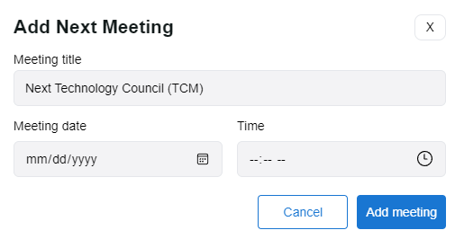
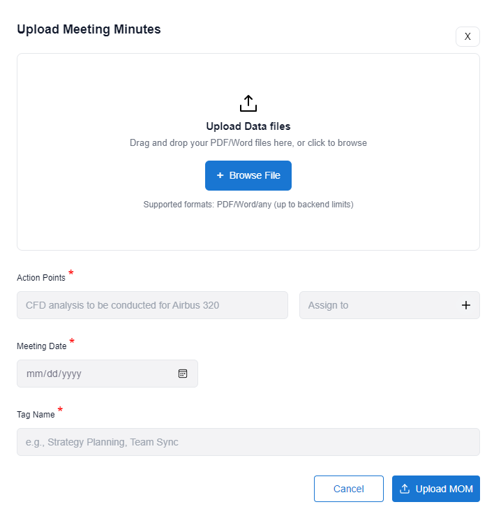
Upload Meeting Minutes and Assign Actions
- Click Upload Minutes.
- Browse and select a PDF or Word file.
- Enter Action Points.
- Assign action owners.
- Select the Meeting Date.
- Enter a Tag Name.
- Click Upload MOM.
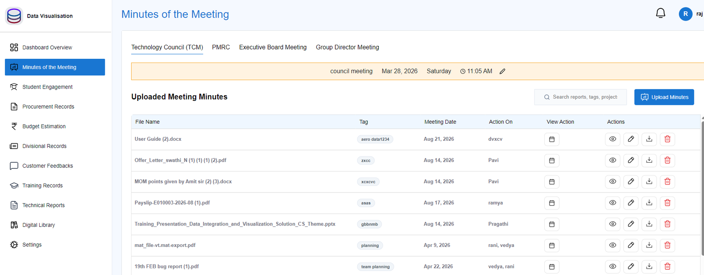
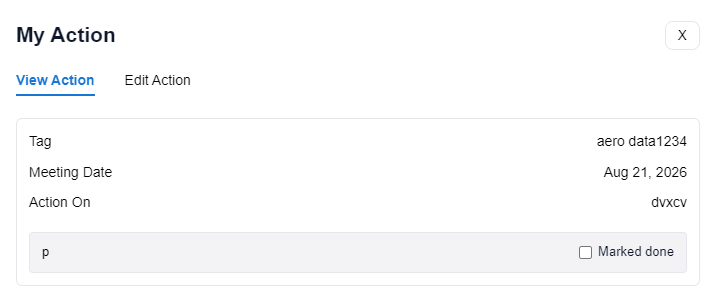
My Action - View Action Workflow
- Open My Action.
- Select the View Action tab.
- Review the:
- Tag
- Meeting Date
- Action Owner
- Assigned Action Point
- Select Marked done when the assigned action is completed.
- Use Edit Action if any permitted changes are required.
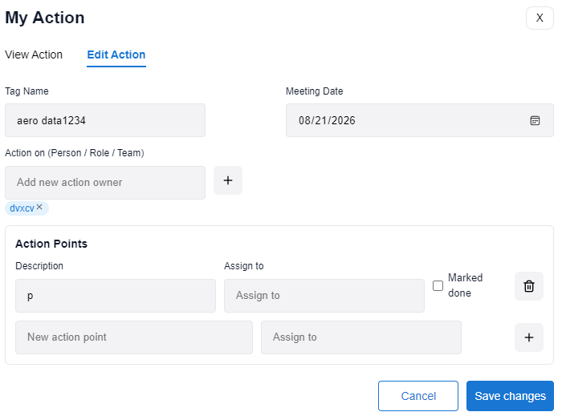
My Action - Edit Action Workflow
- Open My Action.
- Select the Edit Action tab.
- Review or update the Tag Name and Meeting Date.
- Add or change the Action Owner using Action on (Person / Role / Team).
- Under Action Points:
- Edit the action description.
- Assign the action to the required user.
- Use + to add another action point.
- Use the Delete icon to remove an action point.
- Select Marked done when the action is completed.
- Click Save changes to save the updates.
- Click Cancel to discard the changes.
6.Management Record Modules
Student Engagement
- Open Student Engagement from the left navigation menu.
- Use Type or Status filters.
- Click Add Student.
- Upload a supporting PDF/Word document.
- Enter student, college, project, program type, dates, duration, guide, and status.
- Click Add Program.
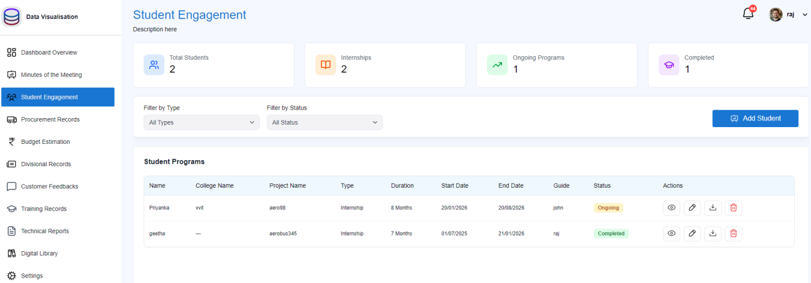
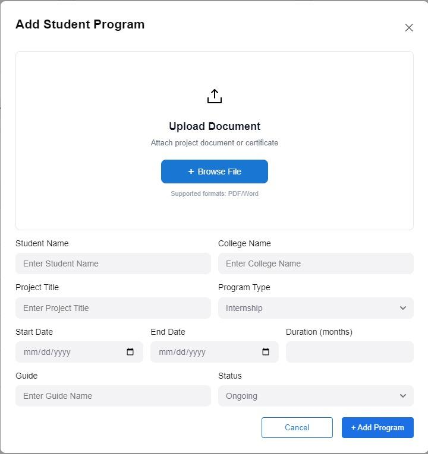
Procurement Records
- Open Procurement Records from the left navigation menu.
- Create or update a supply order as required.
- Enter #SO (Supply Order Number), particulars, supplier, quantity, dates, officer/holder details, status, allocation, and amount.
- Use Manage Assignees to split quantities.
- Save the record.
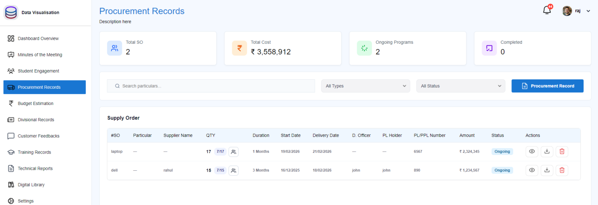
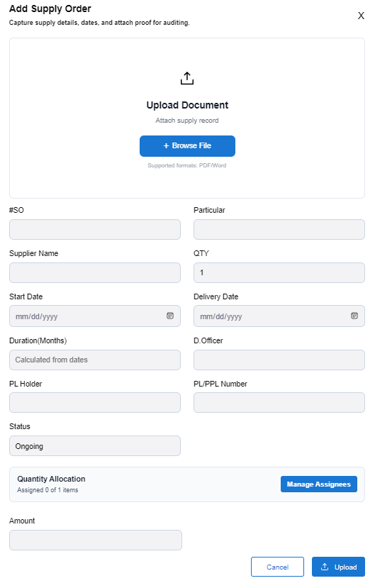
Quantity Allocation
- Open the Assignees popup.
- The system displays Total Quantity, Assigned Quantity, and Remaining Quantity.
- Enter the Number of Items to assign.
- Select the required Assignee / Team / Room / Location.
- The system automatically updates Assigned and Remaining quantities.
- Click Add Assignee to split the quantity among multiple assignees.
- Delete an assignment row using the Delete icon.
- The system prevents assigned quantity from exceeding total quantity.
- The Done button is enabled only when all required assignment details are valid.
- Clicking Done saves the assignments and closes the popup.
- Clicking Cancel or X closes the popup without saving changes.
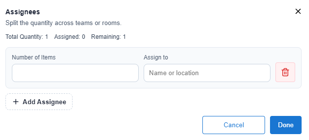
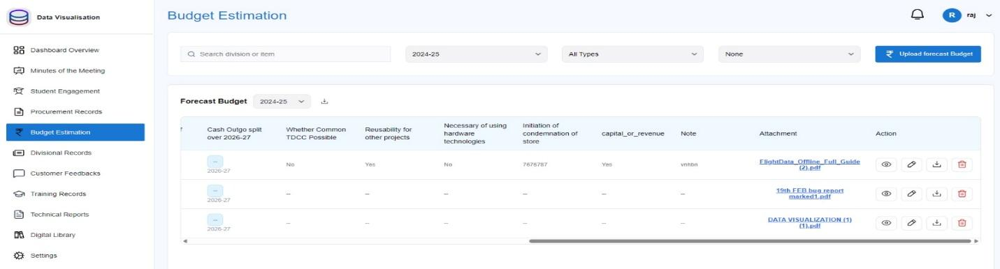
Budget Estimation
- Open Budget Estimation from the left navigation menu.
- Use search, financial year, and type filters.
- Click Upload Forecast Budget.
- Upload supporting document and enter the required forecast details.
- Click Upload.
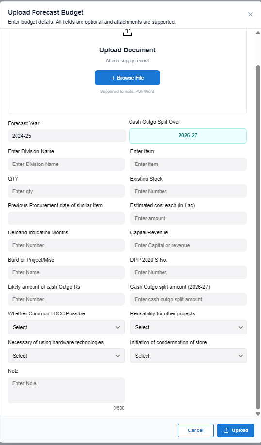
Divisional Records
- Open Divisional Records from the left navigation menu.
- Filter by Type or Status if required.
- Click Upload Record.
- Upload a PDF/Word document and enter record details.
- Click Upload.
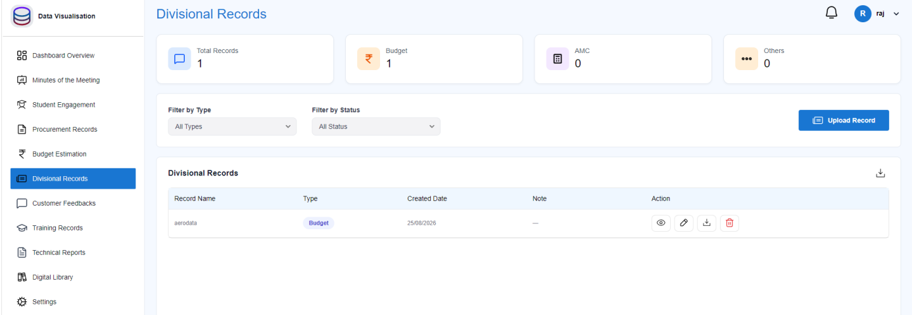
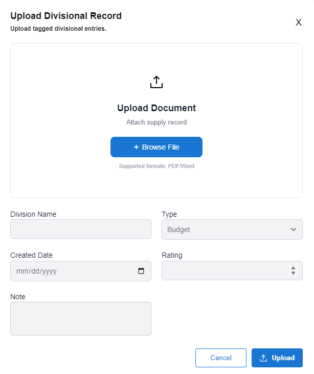
Customer Feedbacks
- Open Customer Feedbacks from the left navigation menu.
- Filter by Division when required.
- Click Upload Feedback.
- Upload supporting document and enter project, division, rating, date, and notes.
- Click Save.
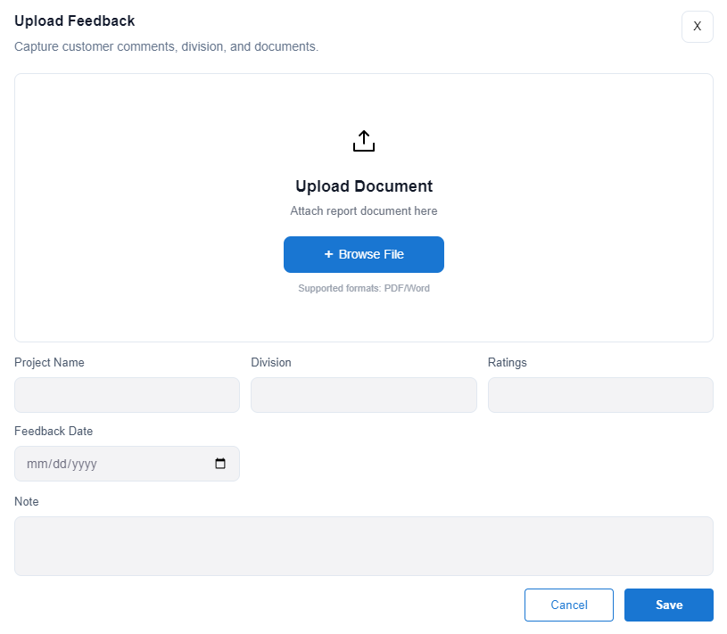
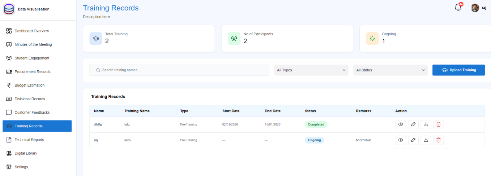
Training Records
- Open Training Records from the left navigation menu.
- Search or filter by Type/Status.
- Click Upload Training.
- Upload the training document and enter trainee, training name, dates, status, and notes.
- Click Upload.
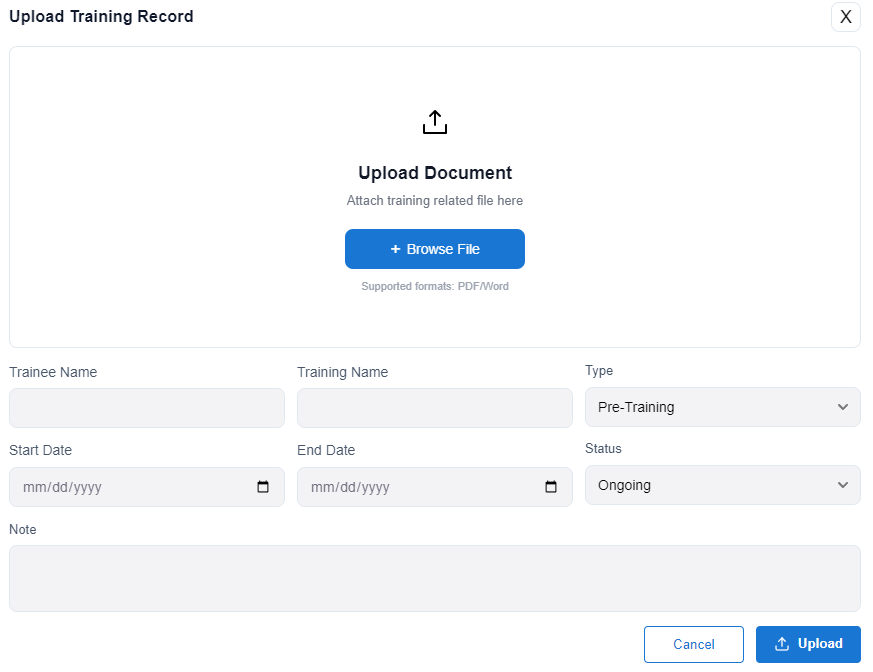
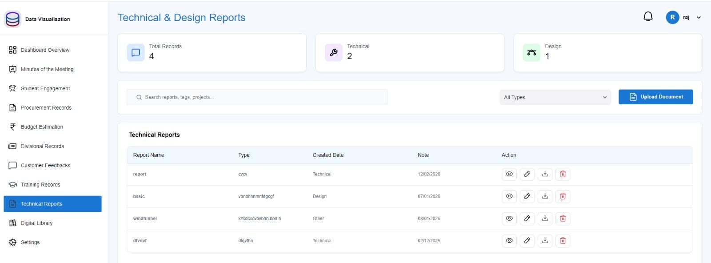
7.Technical & Design Reports
Open Technical & Design Reports to access project technical, design, and other reports.
- Use search or Type filters to locate records.
- Click Upload Document when permitted.
- Upload a PDF/Word document.
- Enter Report Name, Report Type, Created Date, and Note.
- Click Upload.
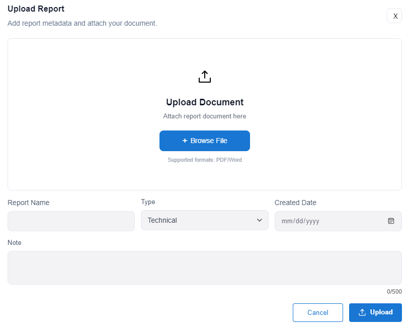
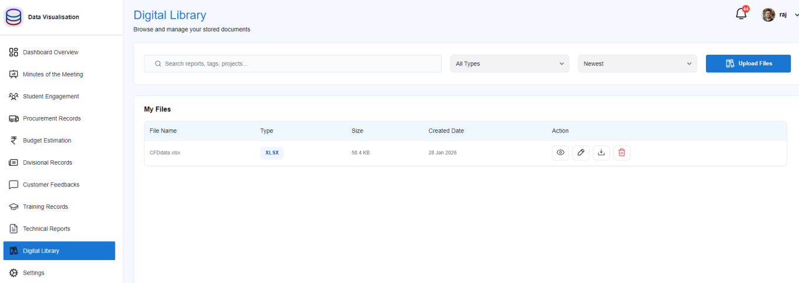
Scope: Delete is available where permitted.
8.Digital Library
- Open Digital Library from the left navigation menu.
- Search by file name, tags, or keywords; filter by Type or sort when required.
- Click Upload File when permitted.
- Select a PDF/Word document.
- Click Upload.
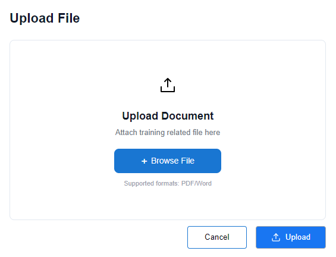
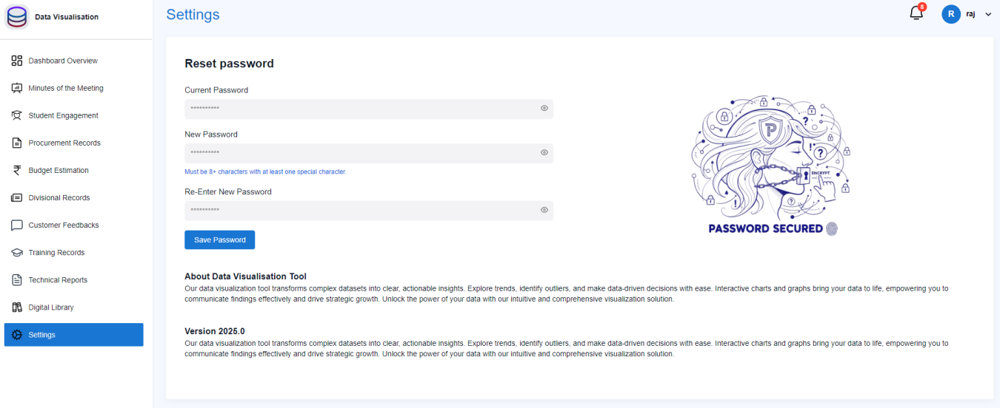
Scope: Available library content. Delete available where permitted.
9.Settings / Own Password
- Open Settings from the left navigation menu.
- Enter the Current Password.
- Enter a New Password.
- Re-enter the New Password.
- Click Save Password.
Password requirement: minimum 8 characters and at least one special character.
10.Project Workspace and Dataset Management
Open an assigned/available project to access its datasets and project-specific modules.
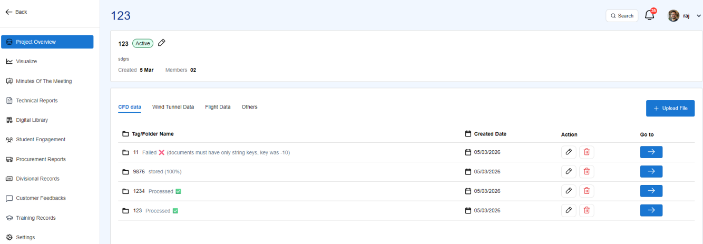
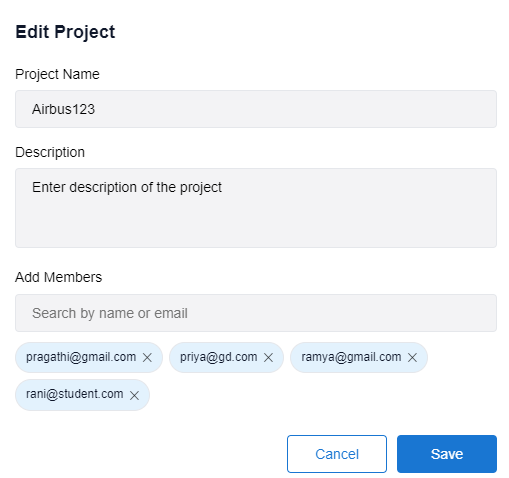
Edit Project Details
- Open the assigned project.
- Click the Edit Project action.
- Update the permitted project details.
- Add or remove members only for the assigned project and within your permission.
- Click Save.
Manage Project Members
- Open the project member management option.
- Review existing project members.
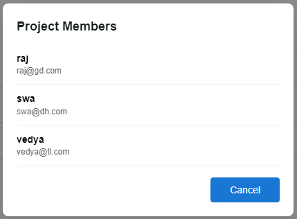
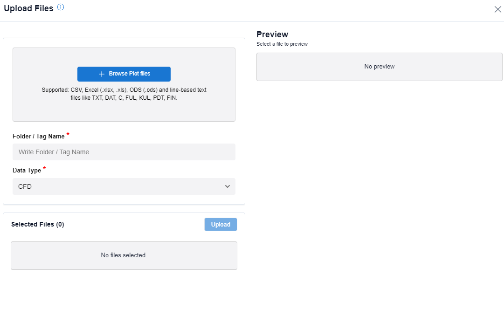
Upload Files
Clicking the Upload File button opens the upload modal.
- Browse and select plot files.
- Preview selected files (if supported).
- Enter Folder / Tag Name.
- Select Data Type (e.g., CFD).
- Upload selected files.
Upload Modal Modes
- Create Mode
- Upload files under a new tag.
- A new folder is created for the selected dataset.
- Edit Mode
- Rename an existing tag.
- Upload additional files to an existing tag.
- The existing Data Type remains fixed and cannot be changed.
File Processing and Navigation
- Files are associated with the selected dataset and tag.
- Users can navigate to the dataset view using the Go To action button.
- Processing status indicators (if applicable) are displayed next to tags.
File Selection
- Click Browse Plot Files to select one or more files.
- Multiple files can be selected at once.
Supported File Types
| File type | Behavior |
|---|---|
| CSV / Excel / TXT / DAT / C / FIN / KUL / ODS / FUL | Preview supported; can be used for visualization. |
| Images | Image preview supported; stored as raw files. |
| Word / PDF | Stored as raw files; preview not supported. |
| MAT | Visualization supported; dedicated MAT preview/processing workflow. |
After selection, the system displays File Name, File Type, File Size, and visualization eligibility where applicable.
Folder / Tag Name and Data Type
- Enter a Folder / Tag Name, which groups the uploaded files.
- Select a Data Type (CFD, Wind Data, Flight Data, Others).
- In edit mode, the data type is fixed and cannot be changed.
Configure Plot File Headers
- Use headers from file - the system reads the first row as headers.
- File has no headers - the system auto-generates names such as column1, column2, etc.
- Provide custom headers - enter comma-separated headers.
- Custom headers can be applied to one or multiple selected files using Apply custom headers to all files.
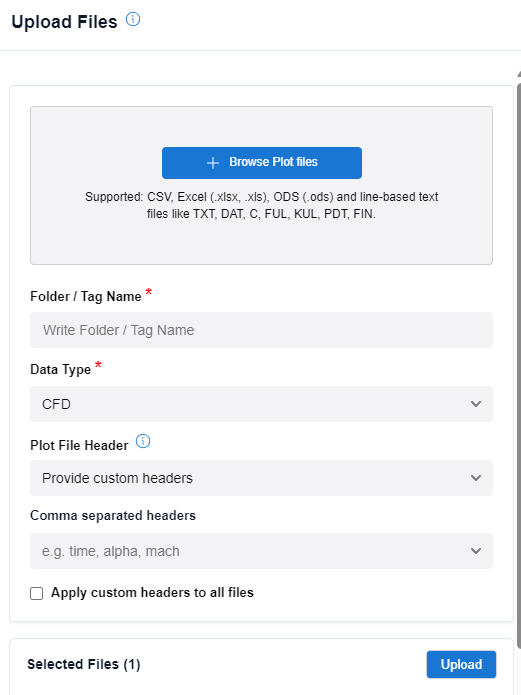
Select File for Preview
- Clicking a file from the list loads it into the Preview panel.
- The preview adapts automatically based on file type.
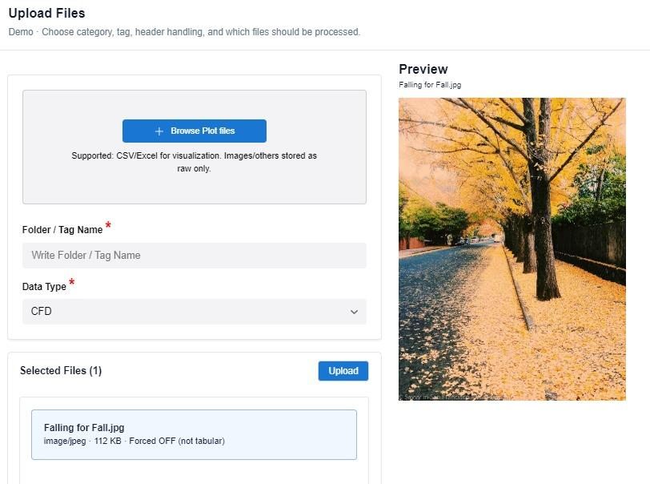
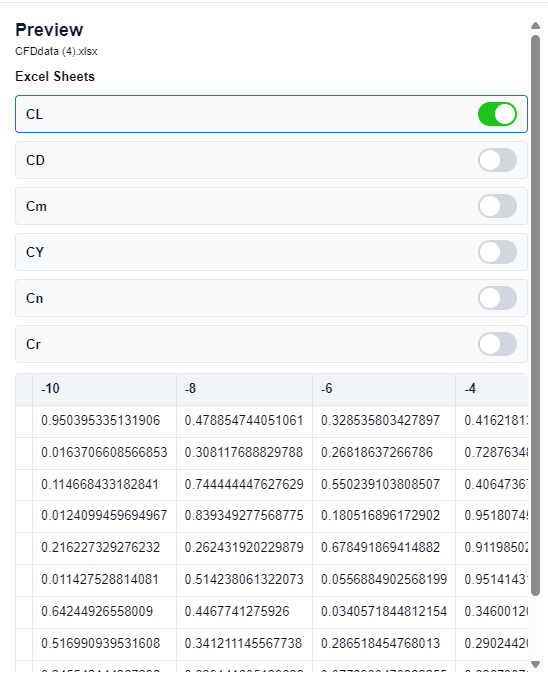
Excel files: All available sheets are listed. Switch between sheets and use the toggle to select sheets for visualization.
DAT / C Text Files
- The preview displays line-by-line data with line numbers.
- Total line count is shown.
- Select a start line and end line.
- Only the selected range is parsed, used for data extraction, and used for plotting graphs.
- The selected range is visually highlighted.
- The system auto-detects headers from the first selected line.
- The parsed data range is also shown as a table preview.
- For .DAT and .C files, users can enable Apply range to all .Dat /.c files.
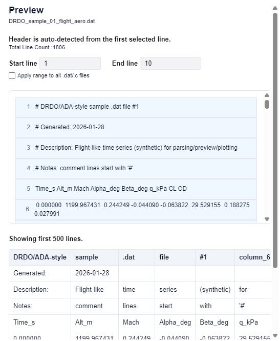
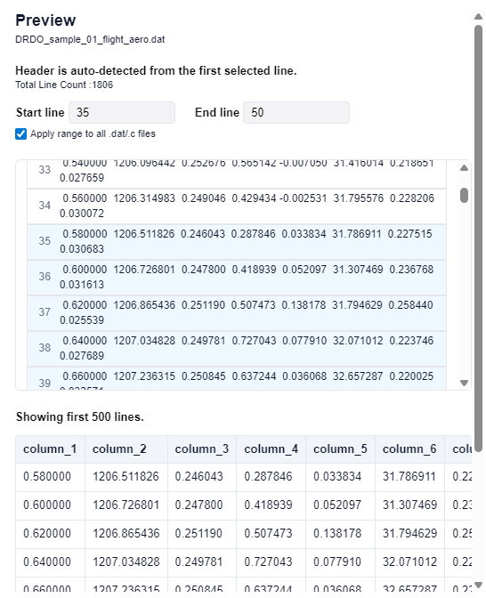
MAT (MATLAB) Files
- The preview displays all variables in the .mat file with dimensions and data types.
- When a variable is selected, its data is shown in tabular format.
- Users can define a slice range to load only a specific portion of the data.
- After clicking Apply, only the selected slice is displayed and processed.
- The selected data is prepared for further parsing and visualization.
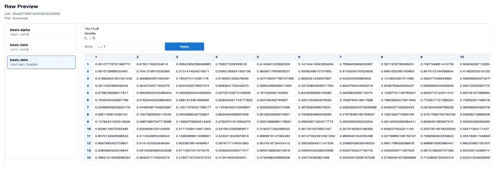
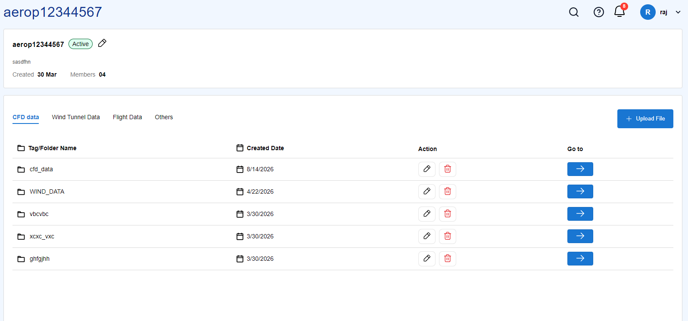
Upload and Processing
- A progress bar shows upload status.
- Files are uploaded with dataset type, tag name, header configuration, selected sheets, and selected line ranges.
- Visualization-enabled files are queued for processing.
- Non-visualized files are stored as raw files.
Clicking Go To in Figure 1 navigates to the Stored Files page shown in Figure 2.
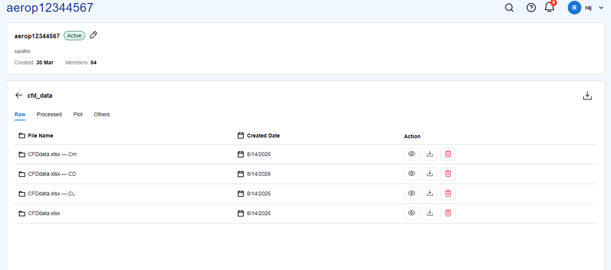
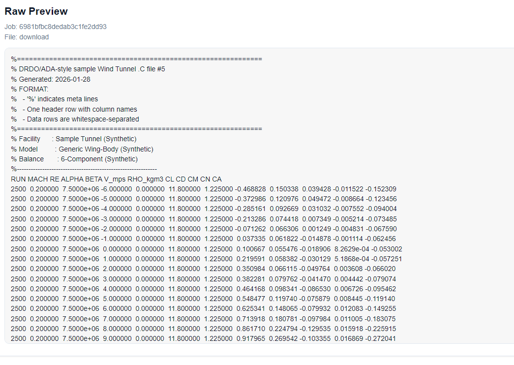
Raw Preview
The Raw Preview page displays the data exactly as it was uploaded, without any changes.
Processed Preview
The Processed Preview page displays parsed data prepared for plotting. Users can edit column headers and click Save to save changes.
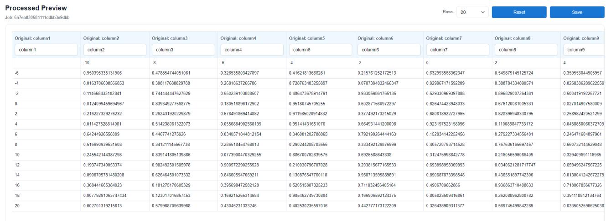
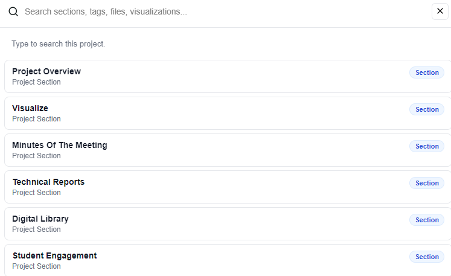
Delete access: Uploaded files and permitted records can be deleted according to the application access rules.
Global Search
- Click Global Search at the top-right of Project Overview.
- Search sections, tags, files, or visualizations.
- Select a result to navigate directly to the corresponding project area.
11.Visualization
Generate a Plot
- Open Visualize from the left navigation menu.
- Select Data Project, Dataset, Tag, and File.
- Select Plot Type and Chart Type.
- Select X Scale and Y Scale.
- Assign X-axis and Y-axis; assign Z-axis when required.
- Optionally enter a Plot Name.
- Click Generate Plot.
- Review the interactive preview and save/manage the visualization as required.
X-axis and Y-axis are required for all plots. Z-axis is required for Contour and 3D plots.
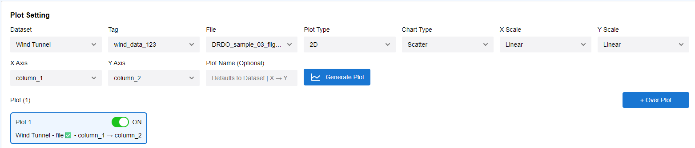
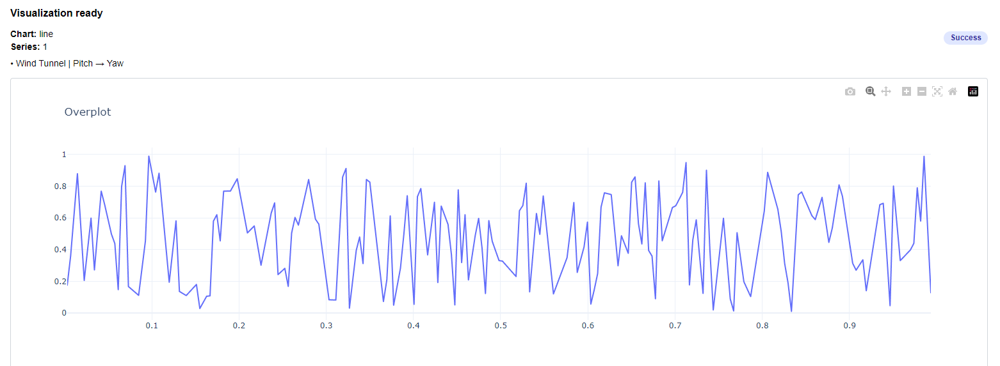
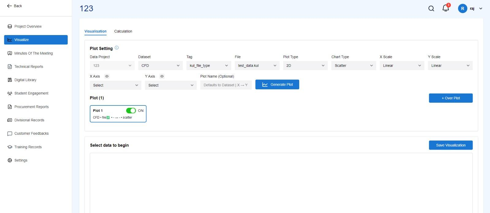
Cross Plotting / Data Browser
- Select Dataset, Tag, and File.
- Click the eye icon next to the X-axis or Y-axis field to open the Data Browser.
- Scroll through row numbers, column names, and values.
- Hover over a column header or row number to display selection checkboxes.
- Select multiple columns or rows if required.
- Use Add Selected Columns as Y or the axis dropdowns.
- Use Deselect All to clear the selection.
Axis Scale Configuration
- X = Log, Y = Linear → Semi-log
- X = Linear, Y = Log → Semi-log
- X = Log, Y = Log → Log-log
- X = Linear, Y = Linear → Linear
Semi-log is produced when only one axis is logarithmic; it is not a separate scale option.
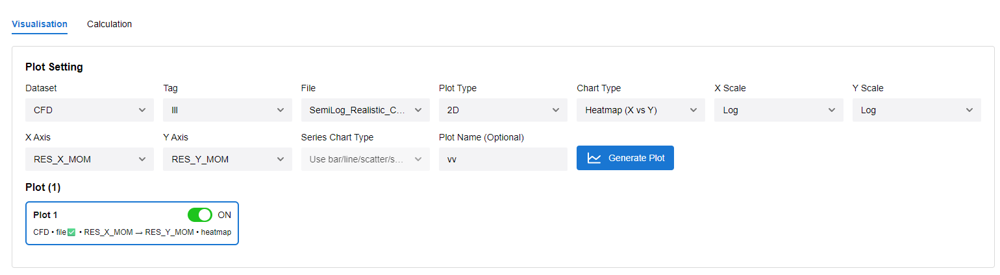
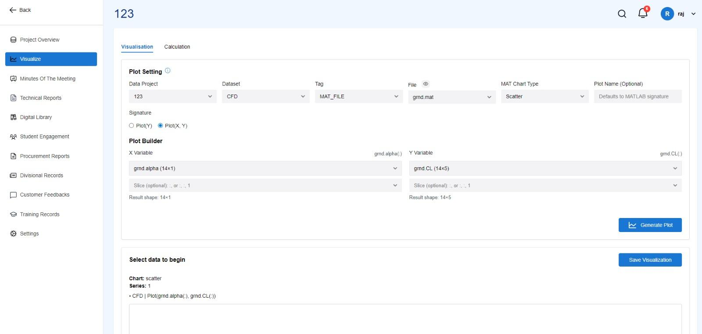
MAT File Visualization
- Select the Dataset, MAT tag, and required .mat file.
- Choose the MAT Chart Type and plot signature.
- Select the required X and Y variables.
- Apply slice values when only part of a large array is required.
- Click Generate Plot.
- Review and save the visualization if required.
Create Multiple Plots (Over-plot)
- Generate the first plot.
- Click + Over Plot.
- Select another column, file, or dataset.
- Configure its plot type, axes, and scales.
- Click Generate Plot again to generate the additional plot.
- Use the ON/OFF toggle to show or hide individual series.
- Remove a series when it is no longer required.
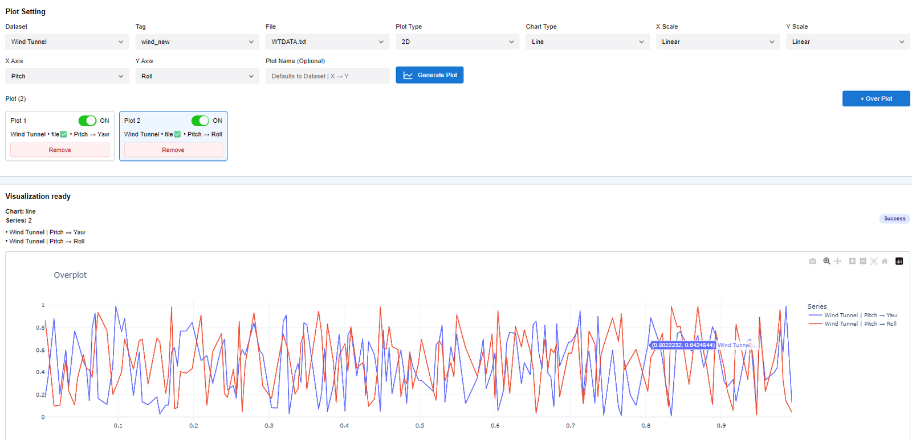
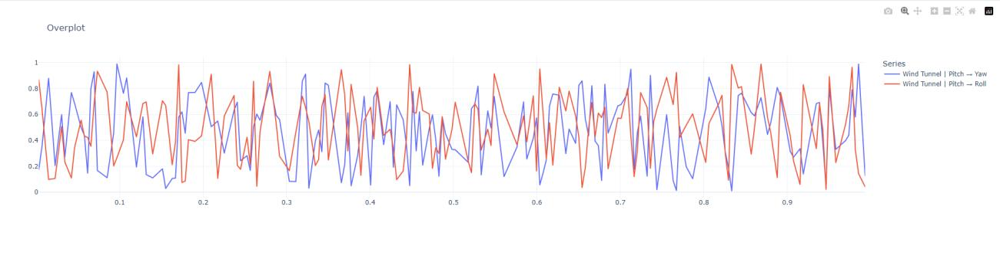
12.Calculation Module
- Select the required Data Project.
- Select the Dataset.
- Select the required Tag.
- Select the File.
- Enter a name for the Derived Column.
- Enter the mathematical Formula.
- Map formula variables to the corresponding dataset columns.
- Review the Formula Preview.
- Click Process Formula button.
- Verify calculated values in Preview.
- Click Save Derived Column.
- Use the saved derived column for further analysis or visualization.
13.Aircraft Performance Module
The Aircraft Performance Module uses available aircraft performance data to analyze operational limits, climb performance, aerodynamic characteristics, and maneuvering behavior under different flight conditions.
Access note: Full access under the GD / DH role.
Use the User Manual for detailed field definitions and the complete access matrix.
End of tutorial guide.